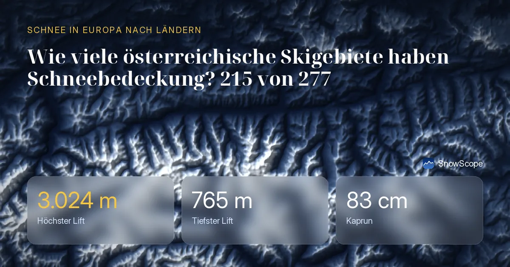

Wie viele österreichische Skigebiete haben Schneebedeckung? 215 von 277
Am 16. November haben 215 von Österreichs 277 Skigebieten messbaren Schnee irgendwo an ihren Hängen. Aber die praktische Realität ist anders: Die Schneegrenze hält bei 1.500 m, also bleiben die meisten Tieflagen-Skigebiete schneefrei, während die höheren Gipfel auf eine ereignisreiche Prognosewoche hinarbeiten.
Die Live-Schneeprognose für Kaprun in der SnowScope-AppSchneehöhen, Pulverschnee-Alarme und 3D-Karte, gratis.
Was 215 Skigebiete bedeuten
In absoluten Zahlen haben die meisten österreichischen Skigebiete jetzt irgendeine Form von Schneebedeckung—215 von 277. Aber lies das genau. Ein Skigebiet mit Schnee bedeutet nicht, dass es bereit zur Öffnung ist. Die Höhenschwelle ist brutal. Unter 1.000 m liegt die Schneebedeckung bei nur 3 Prozent. Zwischen 1.000 und 1.500 m ist nur 28 Prozent der Fläche weiß. Über 1.500 m springt die Bedeckung auf 71 Prozent.
Vor Ort brauchst du Höhe, um jetzt zuverlässiges Skifahren zu finden. Die Haupttäler Österreichs—die unteren Salzburger Alpen, die unteren Tiroler Täler—warten noch. Das ist bisher eine Berggipfel-Saison, und es wird so bleiben, bis der kommende Schnee nächster Woche die Mittelhänge auffüllt.
| Skigebiet | Schneehöhe | Neuschnee, 72 h | Erwartet, nächste Tage | Gipfel |
|---|---|---|---|---|
| Kaprun | 83 cm | 2 cm | 11 cm | 3.024 m |
| Rifflsee | 66 cm | 2 cm | 11 cm | 2.804 m |
| Weißsee Gletscherwelt | 58 cm | 2 cm | 11 cm | 2.555 m |
| Kappl | 51 cm | 3 cm | 17 cm | 2.639 m |
| St. Anton/St. Christoph/Stuben | 50 cm | 3 cm | 18 cm | 2.642 m |

Wo der Schnee am tiefsten liegt
Kaprun führt das Land mit 83 cm an, gemessen in den oberen vergletscherten Zonen. Rifflsee folgt mit 66 cm und Weißsee Gletscherwelt mit 58 cm. Diese hochgelegenen, gletscherbeeinflussten Skigebiete erfassen den ersten echten Frost der Saison effizient. Kappl hält 51 cm und St. Anton 50 cm, beides solide Anfänge für November.
Das Muster ist konsistent. Schneentiefe und Höhe gehen eng zusammen. Die tiefste Ansammlung liegt dort, wo es am höchsten und kältesten ist. Das ist keine Überraschung Mitte November, aber es ist ein Signal, dass die Saison strukturiert ankommt, nicht durch Zufallswetter.
Schnee nach Höhe
Die Höhengeschichte definiert die österreichischen Bedingungen jetzt. Bei 2.000 bis 2.500 m beträgt die modellierte durchschnittliche Tiefe 12 cm und 97 Prozent des Geländes sind bedeckt. Über 2.500 m verbessern sich die Zahlen auf durchschnittlich 23 cm und 100 Prozent Bedeckung. Das sind die zuverlässigen Zonen, wo Skifahren Sinn macht.
Zwischen 1.500 und 2.000 m bleibt die Bedeckung mit 71 Prozent hoch, aber die Tiefe fällt auf nur durchschnittlich 3 cm. Das ist Grenzschnee—Felsen und Geröll ragen durch. Unter 1.500 m bricht das Bild zusammen. Die Schneegrenze sitzt bei 1.500 m fest. Alles darunter liegt auf blankem Boden oder dünnen Flecken.
In der Praxis bedeutet das, dass Frühsaison-Skifahren auf hohe Gipfel beschränkt ist. Mittelhöhen-Zonen sind riskant. Talbasis-Stationen sind geschlossen.
Was kommt nächste Woche
Der Ausblick transformiert die Gleichung. Österreich erwartet bedeutenden Schneefall. Innerhalb der nächsten 7 Tage fallen 50 cm im ganzen Land. Der Spitzentag ist der 21. November, wenn allein 15 cm an diesem einzelnen Tag modelliert werden. In nur den nächsten 3 Tagen werden je nach Ort 11 bis 18 cm erwartet.
Regionale Unterschiede werden das Ergebnis prägen. Vorarlberg, bereits gut positioniert mit 7 cm Neuschnee in den letzten 72 Stunden, sitzt in der optimalen Position für die einströmenden Atlantiksysteme. Tirol hat bisher 5 cm angesammelt und wird einen guten Anteil erfassen. Die Salzburger Alpen, weiter östlich positioniert, haben in den letzten 72 Stunden nur 3 cm erhalten und werden weniger von der einströmenden Welle sehen.
Trend: Schneebedeckung wächst
In Gesamtzahlen tragen 19.550 Quadratkilometer von Österreichs 52.110 Quadratkilometer Skigelände jetzt Schneebedeckung. Das stellt 38 Prozent weiße Bedeckung dar. Vor einer Woche lag die Zahl bei 16.250 Quadratkilometern. Wachstum über sieben Tage: 3.300 Quadratkilometer. Von gestern bis heute hat Österreich 800 Quadratkilometer Schneebedeckung gewonnen.
Der Trend ist aufwärts und beschleunigt sich. Frühsaison-Schnee ist notorisch brüchig, oft dünn, und leicht durch warme Luft gestört. Aber die hier beobachtete Wachstumsgeschwindigkeit—800 Quadratkilometer in 24 Stunden—deutet auf ein echtes Muster hin, das sich einstellt, nicht auf eine kurze Kältewelle, die verschwindet.
Planung deiner Frühsaison
Ein Vorbehalt zur 215er-Zahl: Unser Modell schätzt die Schneebedeckung über modelliertes Gelände. Stationsmessungen in Skigebieten wie Kaprun zeigen 83 cm, was eine direkte Messung von echtem Schnee am Boden ist. Modellierte Tiefen in schneearmen Zonen—zum Beispiel die durchschnittlich 3 cm bei 1.500 bis 2.000 m—sind Schätzungen der Flächenbedeckung. Felsen und Grate ragen durch. Frühsaison-Bedeckungskarten können irreführend sein.
Die ehrliche Zusammenfassung: Österreich baut eine Grundlage für die Saison. Obere Gipfel und Gletscher sind jetzt gut. Untere und Mittelhöhen-Gelände warten noch. Der 50-cm-Forecast nächster Woche wird beide Höhen vertiefen und viele Skigebiete gleichzeitig öffnen. Wenn du heute Anfang-November-Skifahren planst, halte dich an Zonen über 2.000 m oder die höchsten Gletscherbereiche. Ende November wird das Bild viel voller sein.
Tipps für Skifahrer
- Fahre zu Zonen über 2.000 m oder vergletschertem Gelände (Kaprun, Rifflsee, Weißsee Gletscherwelt) für das beste Skifahren heute. Hochlagen-Bedeckung liegt bei 97 Prozent.
- Vorarlberg bietet jetzt den besten Schnee und die stärkste Vorhersage für nächste Woche. Tirol liegt dicht dahinter. Die Salzburger Alpen hinken hinterher, werden sich aber verbessern.
- Markiere 21. November auf deinem Kalender—15 cm werden modelliert, um nur an diesem Tag zu fallen. Dieser einzelne Tag wird Mittelhöhen-Zonen auffüllen und viele untere Skigebiete rentabel machen.
- Frühsaison-Schnee ist dünn und Felsen ragen überall unter 2.000 m auf. Meide steiles Gelände, bis die Tiefen sich weiter aufbauen. Prüfe das offizielle Lawinenbulletin vor jedem Abfahrts-Abenteuer.
- Unser Modell schätzt Flächen-Durchschnittstiefen. Stationsmessungen in einzelnen Skigebieten sind zuverlässiger für die Planung. Dünner Schnee deckt dünnes Gestein im November.
Zu diesen Zahlen
Die Schneehöhen der Skigebiete sind der meiste Schnee in den oberen Hängen laut SnowScope-Schneemodell (etwa 1 km, Lauf vom 16. November); es sind Schätzungen für eine Fläche, keine Messung an einem Punkt. Werte von Messstationen sind Messungen am angegebenen Tag. Prognosen können sich ändern. Lies vor dem Freeriden immer den offiziellen Lawinenlagebericht.
Diesen Bericht zitieren
Für Forschung, Lehre oder Presse: Zahlen und Grafiken sind unter CC BY 4.0 mit dieser Quellenangabe frei nutzbar.
SnowScope (2026), Wie viele österreichische Skigebiete haben Schneebedeckung? 215 von 277, https://snowscope.app/blog/de/2026/11/austria-snow-report-16-november-2026.html, abgerufen am 2026-11-16
SnowScope (Atlas Labs). (2026, November 16). Wie viele österreichische Skigebiete haben Schneebedeckung? 215 von 277. SnowScope snow reports. https://snowscope.app/blog/de/2026/11/austria-snow-report-16-november-2026.html
BibTeX
@misc{snowscope2026austriasnowreport16novem,
author = {{SnowScope (Atlas Labs)}},
title = {Wie viele österreichische Skigebiete haben Schneebedeckung? 215 von 277},
year = {2026},
month = nov,
howpublished = {\url{https://snowscope.app/blog/de/2026/11/austria-snow-report-16-november-2026.html}},
note = {Published 2026-11-16 20:42 UTC; accessed 2026-11-16}
}· CC BY 4.0 · Methoden, Daten und Werkzeuge →
Kaprun: Schnee und Temperatur nach Höhe, dieser Winter vs letzter (Werkzeuge) →
Kaprun folgen
Gratis: eine Nachricht, wenn Neuschnee kommt, und jeden Morgen die Vorhersage.